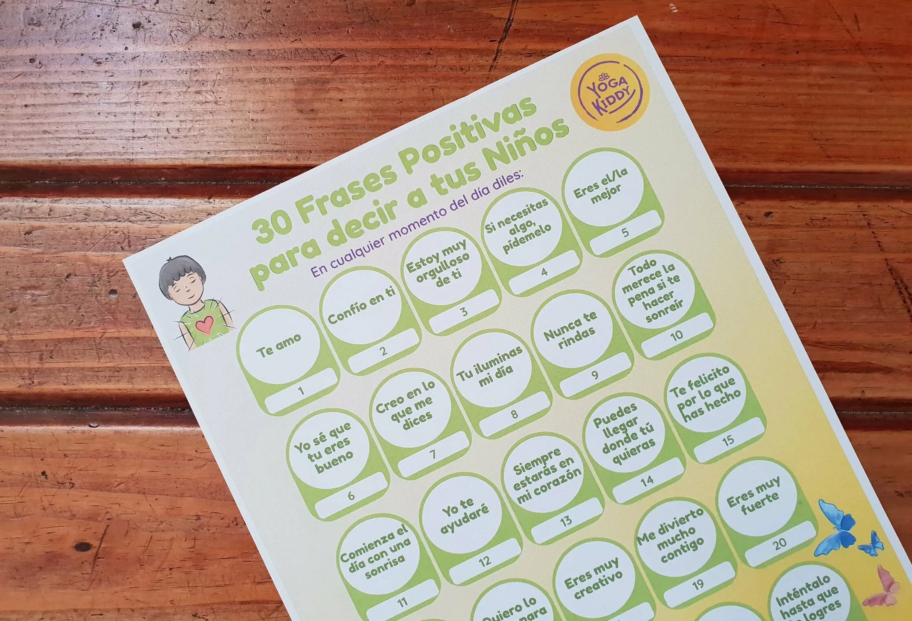

Hola! Primero que todo, espero te encuentres bien de salud junto a tu familia.
Te cuento que donde vivo (Viña del Mar - Chile), hoy viernes 12 de junio, comenzamos con cuarentena obligatoria a causa del Covid-19. Medida que estábamos esperando hace tiempo (aunque en el fondo de nuestros corazones hayamos querido que las cosas pasen de otra manera).
Y bueno, como familia ya llevamos casi 3 meses de cuarentena voluntaria, en donde nos hemos volcado en nuestro trabajo y a disfrutar de nuestra familia.
Nuestra misión y objetivo principal es expandir el Yoga Infantil, aun en estos difíciles tiempos. Y por su puesto en este camino nos hemos encontrado con grandes desafíos, los mismo que seguramente tú como madre/padre/abuelo(a)/hijo(a)/nieto(a)... te has enfrentado.
Por lo mismo, anteriormente compartí 2 actividades para que puedas disfrutar y compartir con tus niños y niñas. Aquí te comparto los enlaces directos por si no los viste, pues ¡aún puedes descargarlos!
1) 30 días de yoga con tus niños
2) 30 días de meditación con tus niños
Hoy día, aquí estoy nuevamente para compartir una nueva actividad que preparé (con mucho cariño). Esta vez no es precisamente un calendario.
Se trata de "30 frases positivas para decir a tus niños", donde la idea es que podamos tomar conciencia, nosotros como padres o como cuidadores, de la importancia de decir frases positivas a nuestros pequeños. Sobre todo, en momentos donde el estrés, el encierro, el miedo y muchas tantas emociones pueden estar embargando los corazones de nuestros niños y niñas, y en donde el apoyo emocional que podamos darles es fundamental.
¿Cuándo utilizar estas frases? Pues cuando quieras o lo sientas! Puede ser en la mañana, en la noche, después de una actividad. Aquí solo quiero compartirte algunas ideas de frases que de seguro le llenarán el corazón a tu pequeño(a) 💚
Todo lo que está pasando es único, tanto para nosotros como para ellos, a si que es muy importante que les demos la importancia necesaria para ayudarlos a aumentar su autoestima y confianza 💪.
Espero que disfrutes de esta actividad, que te pueda servir de apoyo a toda la labor que día a día realizas y si conoces a alguien que pueda interesarle, siéntete libre de compartir el enlace de nuestro sitio web.
Un abrazo con mucho cariño,
Carmen 🙏